Merekam Jejak, Merawat Cerita.
Konadi Media hadir sebagai platform media digital yang berfokus untuk merekam jejak, merawat cerita, serta mengangkat potensi budaya, sejarah, pariwisata, dan informasi aktual dari dataran tinggi Gayo ke kancah yang lebih luas.
Punya info menarik, masukan, atau ingin bekerja sama? Hubungi dan ikuti saluran resmi kami:
Email: tvkonadi@gmail.com | WhatsApp: 0821-6570-7607